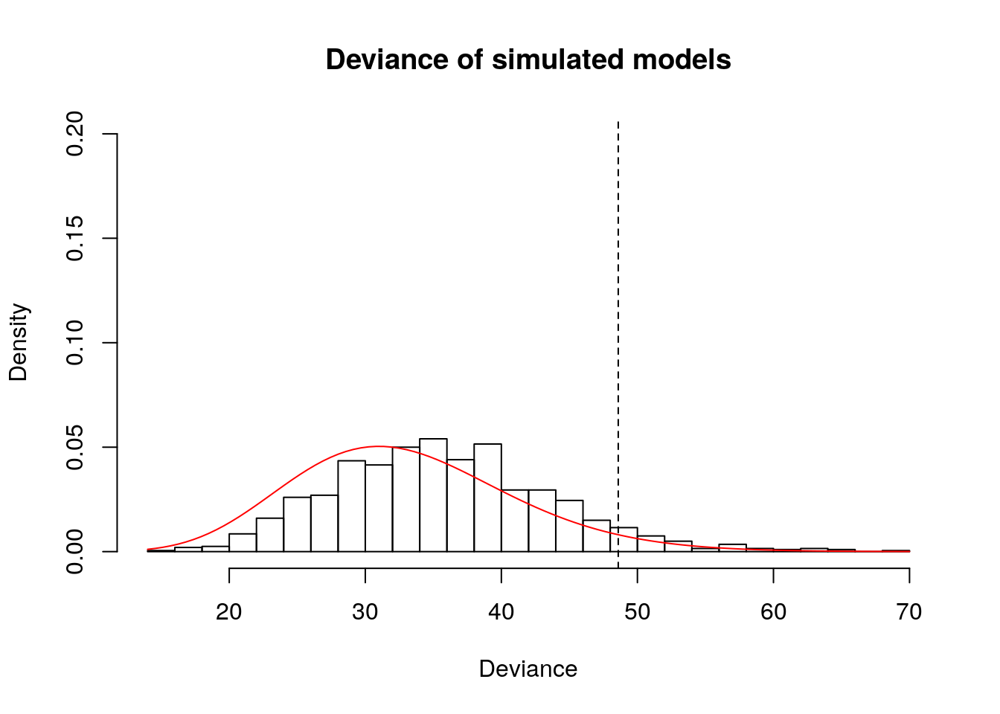

10.3 Solutions
10.3.1 Exercise 13.3 - Two-way contingency tables
cancer <- read.table("https://lbelzile.bitbucket.io/math341/cancer.dat", header = TRUE)
print(cancer)## age malignant yes no
## 1 <50 yes 26 9
## 2 <50 no 68 7
## 3 <50 yes 25 4
## 4 <50 no 9 3
## 5 50-69 yes 20 9
## 6 50-69 no 46 9
## 7 50-69 yes 18 11
## 8 50-69 no 5 2
## 9 70+ yes 1 2
## 10 70+ no 6 3
## 11 70+ yes 5 1
## 12 70+ no 1 0
## 13 <50 yes 11 6
## 14 <50 no 24 7
## 15 <50 yes 4 6
## 16 <50 no 0 0
## 17 50-69 yes 18 8
## 18 50-69 no 58 20
## 19 50-69 yes 10 3
## 20 50-69 no 3 2
## 21 70+ yes 15 9
## 22 70+ no 26 18
## 23 70+ yes 1 3
## 24 70+ no 1 0
## 25 <50 yes 16 16
## 26 <50 no 20 7
## 27 <50 yes 8 3
## 28 <50 no 1 0
## 29 50-69 yes 27 14
## 30 50-69 no 39 12
## 31 50-69 yes 10 3
## 32 50-69 no 4 0
## 33 70+ yes 12 3
## 34 70+ no 11 7
## 35 70+ yes 4 3
## 36 70+ no 1 0# Some categories have small counts, so asymptotic result may be a bit off
cancer.m0 <- glm(cbind(yes, no) ~ 1, family = "binomial", data = cancer)
cancer.m1 <- glm(cbind(yes, no) ~ age, family = "binomial", data = cancer)
cancer.m2 <- glm(cbind(yes, no) ~ malignant, family = "binomial", data = cancer)
cancer.m3 <- glm(cbind(yes, no) ~ age + malignant, family = "binomial", data = cancer)
cancer.m4 <- glm(cbind(yes, no) ~ age * malignant, family = "binomial", data = cancer)
library(xtable)
devtab <- data.frame("model" = c("M0","M1","M2","M3"),
"deviance" = round(c(deviance(cancer.m0), deviance(cancer.m1),
deviance(cancer.m2), deviance(cancer.m3)), 2),
"p" = c(length(coef(cancer.m0)),length(coef(cancer.m1)),
length(coef(cancer.m2)),length(coef(cancer.m3))))
devtab## model deviance p
## 1 M0 57.59 1
## 2 M1 50.44 3
## 3 M2 48.59 2
## 4 M3 41.06 4Now that we have calculated the deviance of every model, we can perform an analysis of deviance and check
whether the final model obtained by backward elimination is adequate by comparing its \(P\)-value under the null.
Some counts in the age category 70+ are very low, hence the asymptotic result can be a bit off. We assess this through a small simulation study in which we resample observations from the fitted model.
# Saturated model vs additive model
1- pchisq(deviance(cancer.m3), df = nrow(cancer) - length(cancer.m3$coef))## [1] 0.7811038# p-value of 0.78, fail to reject null that additive model is adequate
# Try further simplification
drop1(cancer.m3, test = "Chisq")## Single term deletions
##
## Model:
## cbind(yes, no) ~ age + malignant
## Df Deviance AIC LRT Pr(>Chi)
## <none> 0.4941 30.433
## age 2 5.9552 31.894 5.4611 0.06518
## malignant 1 6.6412 34.580 6.1471 0.01316# Fail to reject null that model with only "malignant" is adequate simplification
1- pchisq(2*(c(logLik(cancer.m3) - logLik(cancer.m2))), df = (length(cancer.m3$coef) - length(cancer.m2$coef)))## [1] 0.06518224## [1] 0.01316278## Single term deletions
##
## Model:
## cbind(yes, no) ~ malignant
## Df Deviance AIC LRT Pr(>Chi)
## <none> 5.9552 31.894
## malignant 1 12.6558 36.595 6.7006 0.009638# Reject null that model with only intercept is adequate
# If Model is adequate, Deviance approx JK-p
deviance(cancer.m2)## [1] 5.955231# Is this result vary large? Investigate via simulation study
# Canonical link functions for binomial
logit <- function(x){log(x) - log(1-x)}
# Inverse link function (logistic in course notes)
expit <- function(x){ 1/(1+ exp(-x))}
# Get predicted probability
probc <- expit(predict(cancer.m2))
# Need to condition on total count - fixed for binomial model
nr <- rowSums(cancer[,c("yes","no")])
# Simulate new datasets from the model, compute their deviance
simudev <- rep(0, 1e3L)
for(i in 1:length(simudev)){
newyes <- sapply(1:6, function(j){rbinom(n = 1, size = nr[j], prob = probc[j])})
newcancer <- data.frame(malignant = cancer$malignant, yes = newyes, no = nr - newyes)
simudev[i] <- deviance(glm( cbind(yes, no) ~ malignant, family = "binomial", data = newcancer))
}
# Distribution of deviance from simulated model, conditional on row total
hist(simudev, main = "Deviance of simulated models", xlab = "Deviance", probability = TRUE, ylim = c(0, 0.2), breaks = 20)
# Line corresponding to deviance of
abline(v = deviance(cancer.m2), lty = 2)
# Null distribution
curve(dchisq(x, df = 4), col = 2, add = TRUE)
## [1] 0.27# P-value with asymptotic distribution
1-pchisq(deviance(cancer.m2), df = (nrow(cancer) - length(coef(cancer.m2))))## [1] 0.202516710.3.2 Exercise 13.5 - Equivalence of binomial and Poisson models
We can fit the model using the Poisson generalized linear model with an offset term for log(pop), since the latter is fixed. We cannot make direct comparisons because the population size in each category are different. If \(X \sim \mathcal{B}(m_i, \pi_i)\), the Poisson approximation is \(X \sim \mathcal{P}(\lambda_i)\) with \(\lambda_i \approx m_i\pi_i\). Taking logarithms, we get \(\log(\lambda_i) = \log(m_i) + \log(\pi_i)\). The term \(\log(m_i)\) is an offset with known coefficient of 1.
smoking <- read.table("https://lbelzile.bitbucket.io/math341/smoking.dat", header = TRUE)
smoking.p.m0 <- glm(dead ~ offset(log(pop)), family = poisson, data = smoking)
smoking.p.m1 <- glm(dead ~ offset(log(pop)) + smoke, family = poisson, data = smoking)
smoking.p.m2 <- glm(dead ~ offset(log(pop)) + age, family = poisson, data = smoking)
smoking.p.m3 <- glm(dead ~ offset(log(pop)) + smoke + age, family = poisson, data = smoking)
#Define quantities
n <- nrow(smoking)
p0 <- length(coef(smoking.p.m0)); D0p <- deviance(smoking.p.m0)
p1 <- length(coef(smoking.p.m1)); D1p <- deviance(smoking.p.m1)
p2 <- length(coef(smoking.p.m2)); D2p <- deviance(smoking.p.m2)
p3 <- length(coef(smoking.p.m3)); D3p <- deviance(smoking.p.m3)
#Analysis of deviance
1 - pchisq(D3p, df = n - p3) # Interaction not stat. significative## [1] 0.609872## [1] 0## [1] 0##
## Call:
## glm(formula = dead ~ offset(log(pop)) + smoke + age, family = poisson,
## data = smoking)
##
## Deviance Residuals:
## Min 1Q Median 3Q Max
## -2.06055 -0.54773 0.06431 0.29963 1.48348
##
## Coefficients:
## Estimate Std. Error z value Pr(>|z|)
## (Intercept) -3.63222 0.06783 -53.552 < 2e-16
## smokecigarretteOnly 0.36915 0.03791 9.737 < 2e-16
## smokecigarrettePlus 0.17015 0.03643 4.671 0.00000300158567
## smokeno -0.04781 0.04699 -1.017 0.309
## age45-49 0.55388 0.07999 6.924 0.00000000000438
## age50-54 0.98039 0.07682 12.762 < 2e-16
## age55-59 1.37946 0.06526 21.138 < 2e-16
## age60-64 1.65423 0.06257 26.439 < 2e-16
## age65-69 1.99817 0.06279 31.824 < 2e-16
## age70-74 2.27141 0.06435 35.296 < 2e-16
## age75-79 2.55858 0.06778 37.746 < 2e-16
## age80+ 2.84692 0.07242 39.310 < 2e-16
##
## (Dispersion parameter for poisson family taken to be 1)
##
## Null deviance: 4055.984 on 35 degrees of freedom
## Residual deviance: 21.487 on 24 degrees of freedom
## AIC: 285.51
##
## Number of Fisher Scoring iterations: 4#Same with binomial model
smoking.b.m0 <- glm(cbind(dead, pop - dead) ~ 1, family = binomial, data = smoking)
smoking.b.m1 <- glm(cbind(dead, pop - dead) ~ smoke, family = binomial, data = smoking)
smoking.b.m2 <- glm(cbind(dead, pop - dead) ~ age, family = binomial, data = smoking)
smoking.b.m3 <- glm(cbind(dead, pop - dead) ~ smoke + age, family = binomial, data = smoking)
#Define quantities
n <- nrow(smoking)
D0b <- deviance(smoking.b.m0)
D1b <- deviance(smoking.b.m1)
D2b <- deviance(smoking.b.m2)
D3b <- deviance(smoking.b.m3)
1 - pchisq(D3b, df = n - p3) # Interaction not stat. significative## [1] 0.5530777## [1] 0## [1] 0##
## Call:
## glm(formula = cbind(dead, pop - dead) ~ smoke + age, family = binomial,
## data = smoking)
##
## Deviance Residuals:
## Min 1Q Median 3Q Max
## -1.79861 -0.61857 0.03789 0.45630 1.84921
##
## Coefficients:
## Estimate Std. Error z value Pr(>|z|)
## (Intercept) -3.69508 0.07224 -51.152 < 2e-16
## smokecigarretteOnly 0.50308 0.04494 11.194 < 2e-16
## smokecigarrettePlus 0.24727 0.04307 5.740 0.00000000944146
## smokeno -0.04696 0.05479 -0.857 0.391
## age45-49 0.58001 0.08191 7.081 0.00000000000143
## age50-54 1.03983 0.07921 13.128 < 2e-16
## age55-59 1.49243 0.06718 22.216 < 2e-16
## age60-64 1.82007 0.06438 28.270 < 2e-16
## age65-69 2.25585 0.06511 34.647 < 2e-16
## age70-74 2.63304 0.06785 38.808 < 2e-16
## age75-79 3.07094 0.07423 41.368 < 2e-16
## age80+ 3.56348 0.08433 42.259 < 2e-16
##
## (Dispersion parameter for binomial family taken to be 1)
##
## Null deviance: 4917.031 on 35 degrees of freedom
## Residual deviance: 22.439 on 24 degrees of freedom
## AIC: 277.38
##
## Number of Fisher Scoring iterations: 4# Output deviance table
devtab <- data.frame("model" = c("M0","M1","M2","M3"),
"deviance binom." = round(c(D0p, D1p, D2p, D3p), 2),
"deviance Poisson" = round(c(D0b, D1b, D2b, D3b), 2),
"p" = c(p0, p1, p2, p3))
print(devtab)## model deviance.binom. deviance.Poisson p
## 1 M0 4055.98 4917.03 1
## 2 M1 3910.70 4740.34 4
## 3 M2 191.72 247.94 9
## 4 M3 21.49 22.44 12#To export to LaTeX
#xtab <- xtable(devtab, caption = "Analysis of deviance for the \\texttt{smoking} data set")
#print(xtab, booktabs = TRUE, sanitize.text.function = identity, include.rownames = FALSE, )
# Compare fitted probabilities
par(mar = c(6,6,3,3))
plot(fitted(smoking.b.m3), fitted(smoking.b.m3) - fitted(smoking.p.m3)/smoking$pop,
xlab = "Fitted probability of death\n from logistic model",
ylab = "Difference in fitted probability of death \nbetween Poisson and logistic models",
main = "Smoking cancer dataset", bty = "l")